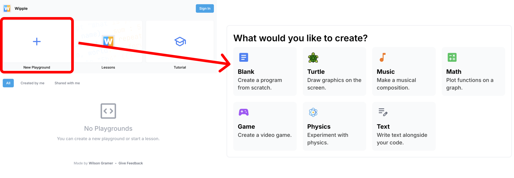

{% include "slide-logo.html" %}
Drawing with Turtle
Students will be able to:
- Explore the Wipple Playground
- Practice movement commands to draw a simple shape
-
Use
repeatrepeat
to draw a complex shape
- Discuss the value of abstraction
Today's plan:
- Warm up: Spirograph
- Guided practice: Setting up Wipple
-
Turn and talk: The
repeatrepeat
command
- Challenge activity: Code a spirograph
- Discuss: Abstraction
{% include "slide-footer.html" %}
Warm up: Spirograph
 Source: The Original Spirograph Design Set (YouTube)
Source: The Original Spirograph Design Set (YouTube)
Warm up: Spirograph
At your tables...
-
Artist:
In charge of the spirograph
-
Translator:
Interpret instructions (count out loud)
-
Writer:
Write down instructions
Work for 3 minutes
Warm up: Spirograph
Switch with the table next to you...
Flip over your paper and follow your new instructions
exactly!
-
Writer:
Read instructions
-
Translator:
Tell artist how to move pen
-
Artist:
In charge of the spirograph
Work for 3 minutes
Warm up: Spirograph
- Compare your drawings
- Were your instructions followed as intended?
- What would you change?
- How could this activity relate to coding?
Artist: put away materials
Guided practice: Setting up Wipple
-
Open your computers and go to
wipple.org
- Click Start coding now

Guided practice: Setting up Wipple

Guided practice: Setting up Wipple

Guided practice: Setting up Wipple
- Click Turtle
- You're ready to start coding!

Guided practice: Setting up Wipple
-
Use these four commands and the dropdowns to draw a
shape:
-
arrow_upwardforward
-
arrow_downwardbackward
-
rotate_leftleft
-
rotate_rightright
-
Work for 5 minutes, then share with your table

Turn and talk
Count your instructions. How could you use fewer instructions?
Writer:
Did you write down every step for the spirograph, or did you leave some
steps out?
Find a Wipple command that could help!
Challenge: Code a spirograph
-
Use the commands you learned today and
repeatrepeat
to draw a unique spirograph!
- You have 30 minutes
- Collaborate at your table
-
Tip: Drag
speedspeed
into your code (under Appearance) to make the turtle go faster

When you're done...
- Click Print and save the file
Discuss: Abstraction
Think about using
repeatrepeat
in your spirograph. What did it make easier? What could it make more
difficult?
Exit ticket (on your own)
- Upload your code and drawing (click Print)
-
How many
times
did you
repeatrepeat
to draw your spirograph? How do you know?
-
Could you draw your spirograph without
repeatrepeat
? Why or why not? Which way do you think is better?
- Quickly answer the survey questions
When you're done: Come get your printed drawing!